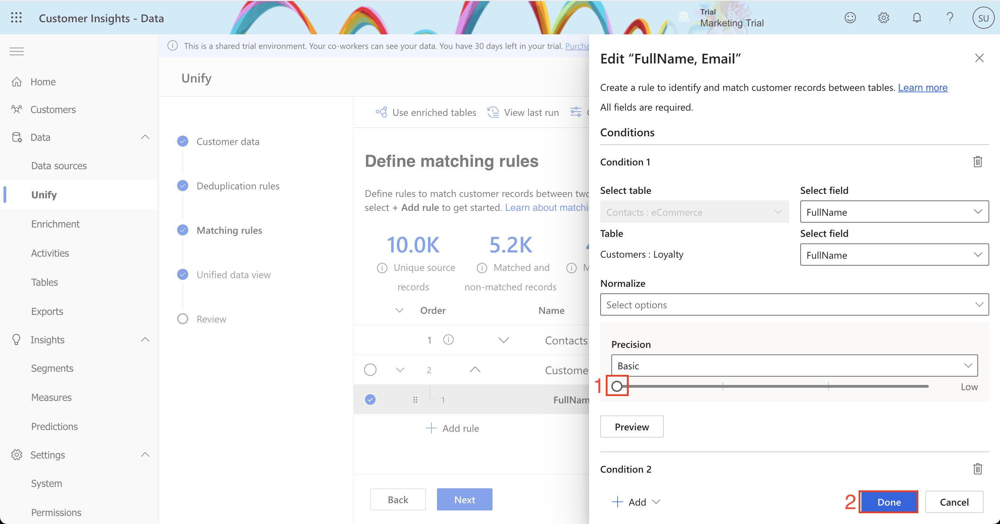
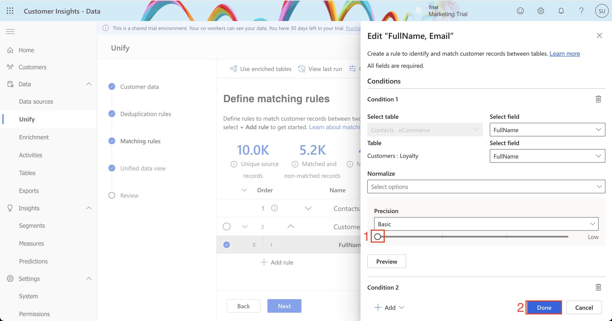

Lab 2.2: Create a unified customer profile
Learning Path 2: Work with unified customer profiles in Dynamics 365 Customer Insights - Data
Having ingested the raw data from your data sources into entities, you will now begin the Map, Match, Merge process to create a single Unified Customer Profile by merging data from each customer profile source. To do this, you will first map your ingested entities against a standard model and select the Primary Key for each of your profiled entities. Following the completion of this, you will then create your Match Rule that will be used to match contacts from all customer entities. Finally, running the Merge process will create a single set of unique Customers having matched profiles from all customer entities using your match rules. Your objective is to find out how many unique customer profiles Contoso Retail has across various data sources.
Exercise 1 - Unify the data
Task 1 - Map contacts to common data types
- Sign into Customer Insights - Data at https://home.ci.ai.dynamics.com.
- On the left navigation menu, expand Data and select Unify.
- In the Customer Data section, select Get started.
- On the Describe the customer data to be unified screen, select + Get started.
- Select the tables that will represent the customer profile. Those tables are:
- Contacts (eCommerce)
- Customers (Loyalty)
- Select Apply.
- You will now be presented with the mappings of your source table against standard model types. You can review the types in the table.
- You must choose a 'Primary Key' for each entity you have ingested. The primary key must be a unique reference. For eCommerce Contacts, select ContactId as the primary key.
- The eCommerce Contacts data contains a column named Email Subscriber which will be mapped to an incorrect type, Identity.Service.Email, because of the name. Open the drop-down for this column and select the empty option (nothing/blank). If we do not do this, then the default system behavior is to merge this field with the Email field which we do not want.
- Select Customers under Tables and set LoyaltyId as the primary key.
- Select Save source columns in the top left-hand corner.
- Select the Next button, and then select Next again to skip the duplicate checking and move on to the Matching rules step.
Task 2 - Specify Match Order
For the next stage, we must select the order in which to merge the profiles. You will be able to merge attributes to ensure that the unified profiles are complete as well as the priority of which sources to use for those attributes.
- You should select the most complete or accurate profile source as the Primary (first) source. Verify Contacts: eCommerce is the primary (first) source (or move it if it isn't already).
- Select the check mark to Include all records.
- Verify that Customers: Loyalty is the second source in the list. Choose to Include all records.
Task 3 - Create a Match Rule
In this task, you will create a simple rule used to match records together. Rules can consist of single (e.g. based on ID) or multiple conditions (e.g. FullName, PostCode, Date of Birth). For further details on Match Rules, please see Customer Insights documentation.
- There is a warning indicator on the Customers: Loyalty line. Select + Add rule or select the + icon on the right.
- Add the first condition using FullName:
- For the Contacts: eCommerce table, select the FullName field.
- For the Customers: Loyalty table, select the FullName field.
- Leave the Normalize drop-down blank.
- Set the Precision Level to Basic using the drop-down field.
- Set the Precision Value to High using the slider.
- Enter the name FullName, Email for the rule.
- Add a second condition for email address by selecting + Add and selecting Add condition.
- For the Contacts: eCommerce table, select the EMail field.
- For the Customers: Loyalty table, select the EMail field.
- Leave the Normalize drop-down blank.
- Set the Precision Level to Basic.
- Set the Precision Value to High.
- Select Done.
- Select Next, select Next and select Create customer profiles.
Customer Insights is now matching customer data from all your sources of customer information to identify how many unique customer profiles you would have based on your rules. Confer with the class: How many unique customers do you have when combining your datasets?
Task 4 - Precision
In Task 3, we used High Precision in the match-rule against Full Name. In this task, you will adjust the precision level to create a higher number of matches by including matches of a lower confidence (resulting in a lower number of unique profiles).
Notes on Precision:- Exact on the right-side of the scale will match records where your condition has an exact match. Select one of the other levels to match records that are not 100% identical.
- High fits cases where precision is more important than reach, such as a financial service to a specific customer.
- Low fits cases where the opposite is true, such as a marketing campaign.
- The Medium level serves as a middle-ground option.
- In Customer Insights, expand Data in the left-hand navigation menu. Select Unify.
- Under Matching rules, select Edit.
- Expand the Customers: Loyalty rule and select the Edit button to open the FullName, Email conditions pane.
- Under Condition 1, select Preview and note the values. Move the Precision slider for Condition 1 from High to Low. Select Done.

 

- Select Next, select Next, and select Create customer profiles.
- Wait for the matching process to complete.
- Once the match process has completed, click Edit on matching rules. Select the vertical dots menu next to the FullName, Email rule and select Preview to see the match results and the Score. This shows how Customer Insights matched the data tables based on the rules you have defined. Some profiles have been created with a lower confidence of matching.
- Close the preview and select Edit. Select the Preview button below Condition 1. Here you can preview the number of Unmatched and Matched records for the FullName condition.
- Select Preview data under Unmatched or Matched to preview the matches. Notice how the high scores have exact spelling but can match even if the name format (First Name, Last Name / Last Name, First Name) is different. With the low scores, notice how matches are made even when names are not spelled identically.
- Close the Criteria preview pane and select Cancel.
Confer with the class: How many Unique Customer Profiles do you have now?
Task 5 - Unifying customer fields
This is the last phase in the data unification process. The purpose is to reconcile conflicting data and to define the attributes that will be used in the unified customer profile. A merged attribute is an attribute that exists in more than one data source and represents the same piece of data. For example, we may have ‘Email Address' in both eCommerce Customers and Loyalty Customer data sources. Customer Insights will attempt to identify the attributes to be merged to the standard data types we defined in the Source fields step.
- In Customer Insights, expand Data in the left-hand navigation menu. Select Unify.
- Under Unified data view, select Edit.
- Under Customer columns, note how attributes from different data sources that are of the same type (e.g. FirstName) have been merged.
- Expand the FirstName merged attribute. You should see that the FirstName attribute in eCommerce: Contacts is ranked number 1. This denotes that where you have a matching customer profile in LoyaltyScheme and eCommerce, the FirstName taken from eCommerce: Contacts will be the primary.
- Select Next and select Create customer profiles.
- Wait for the process to finish.
Congratulations! You have successfully ingested, mapped, matched, and unified data from multiple sources within Customer Insights to create a Unified Customer Profile that can be used to gain insights into your whole customer base.
Exercise 2 - Search for customers
In this exercise, we will set up Search and Filter criteria to enable Customer Insights users to search for unified customer profiles so that you can quickly pull information on a specific customer or group of customers.
Task 1 - Configure the Search Columns and Filter Index
- In Customer Insights, select Customers from the left navigation menu.
- Select Search & filter index.
- Some customer search-specific fields are already added by default and you can add more by selecting + Add from the toolbar.
- Make sure CustomerId, FirstName, LastName, FullName, DateOfBirth, EMail, PostCode, ContactId (eCommerce_Contacts), and LoyaltyId are selected. Deselect any other fields that are checked. Select Apply.
- Select Save.
Task 2 - Search for a Customer Record
- In Customer Insights, select Customers from the left navigation menu. You should be presented with a set of customer cards, representing the Unified Profiles. You can expand cards to see more about the customer or sort the cards by various fields. Try this by selecting Expand cards and Sort by on the toolbar.
- You can use Search customers to search for text attributes relating to unified customer profiles. (E.g. Searching '24502' will search against all text attributes and return matches and partial matches.)
Use the search bar to answer the following questions:
- What is Brian Gobble's Date of Birth? (Search for Brian Gobble)
- Which customer has Loyalty Card ID LOYID_5707? (Search for LOYID_5707)
- Which customer has a postcode of 24502? (Search for 24502)